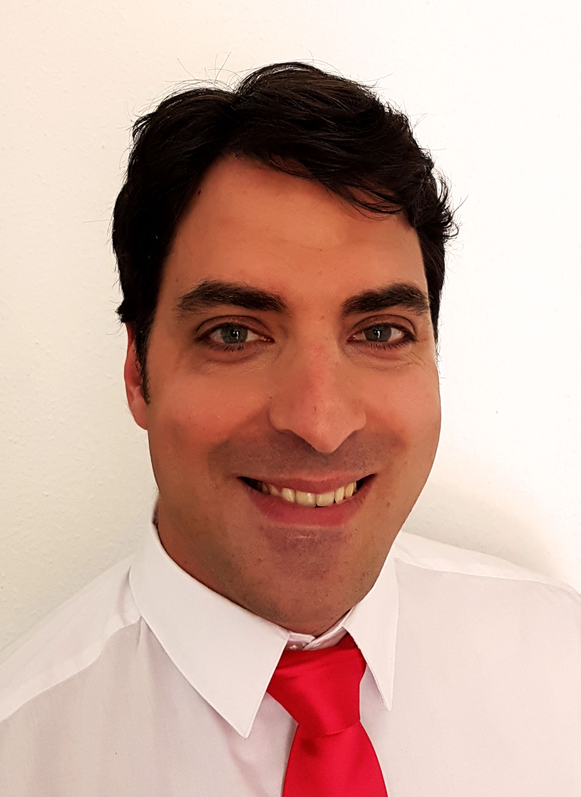

Gammaro Spiro

Berufserfahrung
09.2018 – bis dato:
Performa Schweiz AG, Flughafen Zürich
Teamleader Swiss First Class Lounges:
- Verantwortung für einen reibungslosen Tagesablauf, Überwachung der Serviceabläufe in der Lounge.
- Eigenständiges Führen einer Tagesschicht, Kontrolle der Arbeisabläufe.
- Administrative Tätigkeiten.
- Bedienung und Betreuung der Gäste, Ansprechpartner für Passagiere und Mitarbeiter.
- Einhaltung und Überwachung der Hygienerichtlinie, HACCP.
- Bestellen von Non Food Material, Programmierung der Kasse.
- Durchführen von Catering in der Zentrale.
- Erstellen von Cocktails und Cocktailkarte.
04. 2012 – 08. 2018:
Do & Co Lounges GmbH, Flughafen Frankfurt am Main, Deutschland
Loungeleiter Lufthansa 1st Class Lounges:
- Verantwortung für einen professionellen und reibungslosen Serviceablauf.
- Mise-en-place Arbeiten.
- Aktive Gästebetreuung.
- Erreichen von höchster Gästezufriedenheit durch Einhaltung der Servicestandards.
- Sicherstellung und Einhaltung der Qualitäts- und Hygienevorschriften.
- Planung und Durchführung der Inventur.
- Mitarbeiterführung, Einarbeitung neuer Mitarbeiter.
12. 2010 - 03.2012:
Leitz & Schwarzbauer, Frankfurt am Main, Deutschland
Teamleiter im Service:
- Vorbereitungsarbeiten im F&B Bereich.
- Sicherstellung der Servicestandards.
- Gäste- und Kundenbetreuung.
- Leitung einer Servicebrigade von bis zu 50 Mitarbeiter.
- Unterweisung und Einarbeitung von Mitarbeitern.
01. 2010 - 08. 2010:
Restaurant Classico, Frankfurt am Main, Deutschland
Chef de Rang:
- Restaurant Service.
- Beverage Warenbestellung.
03. 2005 - 06. 2009:
Sheraton Hotel & Towers, Restaurant “Flavors”, Frankfurt am Main,
Deutschland
Demi Chef de Rang:
- Führung einer Station im Tagesrestaurant.
- Restaurant Service.
10. 2004 - 01. 2005:
Hotel Cetus**** , Salerno, Italien
Demi Chef de Rang:
- Saisonarbeit im Restaurant- und Bankettbereich.
06. 2004 - 09. 2004:
Restaurant “Palazzo”, Heidenheim, Deutschland:
- Saisonarbeit im Küchenbereich.
11. 2002 - 05. 2004:
Hotel Cetus**** , Salerno, Italien
Demi Chef de Rang:
- Saisonarbeit im Restaurant- und Bankettbereich.
Berufsausbildung/Schulausbildung
09.1997–06.2002: Staatliche Berufsschule für Hotel und Restaurantdienstleistungen,Castrovillari Cosenza, Italien
Abschluss: Diplom Restaurantfachman, Note: 1,7
09.1994–06.1997: Allgemeine Mittelschule,Corigliano Calabro, Italien.
Sonstige:
Sprachkenntnisse:
- Deutsch, Englisch: verhandlungssicher in Wort und Schrift.
- Italienisch, Griechisch: Muttersprache.
- Französisch: Grundkenntnisse.
IT-Kenntnisse:
- Windows, Linux, MS-Office (Excel, Word, Powerpoint),HTML, Photoshop, Hardware und Software.
Hobbys:
About Me
Contact